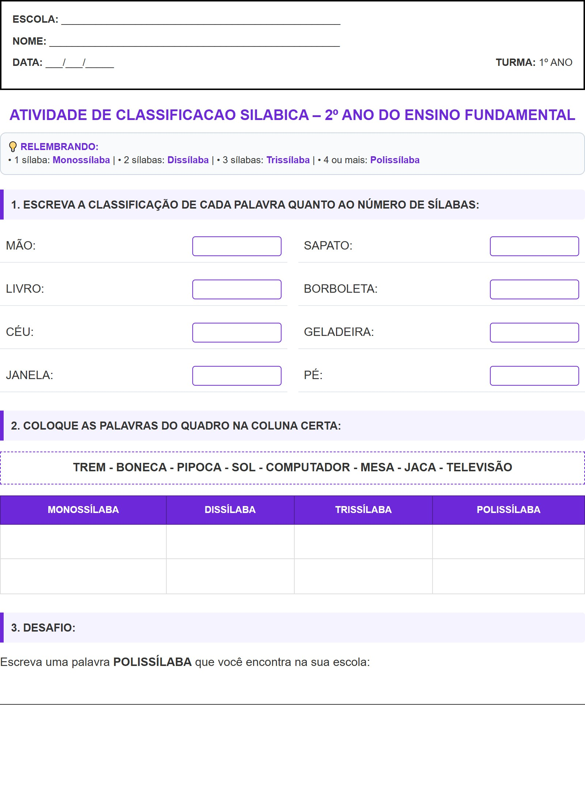

← Voltar ao Portal
ESCOLA:
_________________________________________________
NOME:
___________________________________________________
DATA:
___/___/_____
TURMA:
1º ANO
Atividade de Classificacao Silabica – 2º Ano do Ensino Fundamental
💡 RELEMBRANDO:
• 1 sílaba:
Monossílaba
| • 2 sílabas:
Dissílaba
| • 3 sílabas:
Trissílaba
| • 4 ou mais:
Polissílaba
1. ESCREVA A CLASSIFICAÇÃO DE CADA PALAVRA QUANTO AO NÚMERO DE SÍLABAS:
MÃO:
SAPATO:
LIVRO:
BORBOLETA:
CÉU:
GELADEIRA:
JANELA:
PÉ:
2. COLOQUE AS PALAVRAS DO QUADRO NA COLUNA CERTA:
TREM - BONECA - PIPOCA - SOL - COMPUTADOR - MESA - JACA - TELEVISÃO
MONOSSÍLABA
DISSÍLABA
TRISSÍLABA
POLISSÍLABA
3. DESAFIO:
Escreva uma palavra
POLISSÍLABA
que você encontra na sua escola:
Visualização da Folha de Atividade
